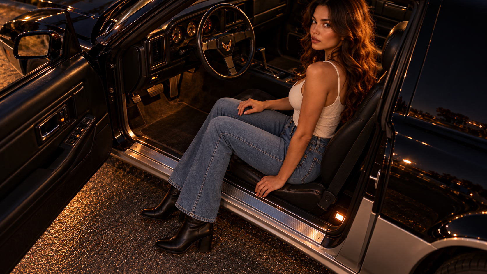
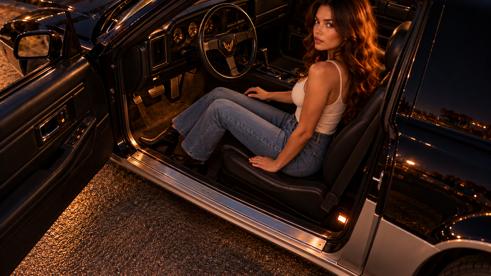

Quand la vidéo est calculable,
mais pas encore crédible
Retour d’expérience indépendant sur NVIDIA Jetson AGX Orin 32 Go
BY MANIX · octobre 2026
VISITES · MESURE RÉELLE À CONNECTER
Les modèles ont généré des vidéos sur l’AGX. Aucun essai n’a encore montré correctement et de façon continue la femme qui rentre les deux jambes dans la Pontiac avant que la portière se ferme. Les fichiers longs issus du ralentissement ou de l’assemblage ne sont pas présentés comme du mouvement inédit réussi.
Ce que nous avons appris
SANA-Video 2.0 5B, HunyuanVideo 1.5 et Wan Animate ont tous exécuté une génération locale. Selon le modèle, les résultats ont été trop courts, dérivants, déformés ou physiquement incohérents. Les images de début et de fin, les guides de pose et les masques aident, mais n’imposent pas une trajectoire correcte à chaque image.
Une durée de fichier n’est pas une preuve de mouvement continu : plusieurs sorties de 30 ou 60 secondes sont des assemblages ou des ralentissements de clips natifs beaucoup plus courts. Nous avons corrigé les rapports lorsque l’examen image par image a révélé une jambe encore dehors pendant la fermeture.
La règle physique de la scène
Un clip qui inverse cet ordre ou traverse la carrosserie est refusé, même si l’image est jolie.
Essais résumés
| Modèle / méthode | Essai | Verdict sur la scène |
|---|---|---|
| SANA-Video 2.0 5B | Autres plans jusqu’à 1280×736; scène femme 832×480 native, ~8 s | Refusé : mouvement ambigu, dérive ou duplication. |
| HunyuanVideo 1.5 I2V distillé | 384×208; clips ~5 s; six plans assemblés en 30 s | Refusé : jambe dehors quand le torse entre / porte incohérente. |
| Wan 2.1 FLF2V 14B Q5_K_M | 512×288, contrôle de première/dernière image | Refusé : artefacts de transition. |
| Wan 2.2 Animate 14B Q5_K_M | 512×288, 49 images, ~3,06 s | Progrès partiel : identité et voiture plus stables, bottes fusionnées. |
| Interpolation optique CPU | Jambes seules sur fond fixe, ~3 s | Prototype partiel; méthode 2D, pas une génération vidéo IA. |
Exemples vidéo réellement produits
Ces extraits viennent des campagnes locales décrites dans le rapport. Les vidéos longues portant la mention « montage » assemblent ou ralentissent des séquences courtes. Ils montrent aussi les défauts qui ont motivé le refus, pas seulement les meilleurs aperçus.
LTX-2 19B · montage d’essai de 30 s
256×256 · 8 i/s · 30,0 s
Montage de générations courtes. Le véhicule dérive visuellement; ce n’est ni une séquence native continue ni la scène d’entrée dans la voiture.
Wan 2.2 TI2V 5B · référence voiture
1024×576 · 24 i/s · 30 s
Séquence de référence sur une voiture en mouvement, assemblée à partir de scènes. Elle montre le rendu obtenu pour un autre essai, pas l’action femme → siège.
SANA Video 2.0 5B · sortie native
1280×736 · 24 i/s · 8,04 s
Clip réellement généré par le modèle. L’action et la continuité de la scène ne satisfont pas le scénario demandé.
Voir l’extrait de 12 s montrant le défaut du montage long (extrait du montage interpolé de 60 s; deux personnages apparaissent dans ce passage)
SANA-Video 2B · smoke test
832×480 · 16 i/s · 1,06 s
Preuve de fonctionnement du pipeline image-vers-vidéo sur un essai très court; le rendu est flou et ne valide pas la scène.
HunyuanVideo 1.5 · image-vers-vidéo
384×208 · 24 i/s · 5,04 s
La personne et la voiture changent de forme et de position; l’entrée complète dans l’habitacle n’est pas réalisée.
Wan 2.1 FLF2V 14B · contrôle début/fin
512×288 · 16 i/s · 5,06 s
Exemple rejeté : la transition entre les images de contrôle produit des artefacts importants.
Wan 2.2 Animate 14B · progrès partiel
512×288 · 16 i/s · 3,06 s
La scène reste plus stable, mais les bottes et les jambes se confondent; essai non validé pour le film final.
Interpolation optique CPU · témoin de comparaison
512×288 · 16 i/s · 3,06 s
Traitement 2D de jambes sur fond fixe, pas une génération par modèle vidéo. Le mouvement reste limité et ne constitue pas un résultat final.
Images de référence de la scène
Images de départ et d’arrivée utilisées comme références de travail pour les essais. Elles ne prouvent pas que le modèle a correctement généré les images intermédiaires.


Prochaine étape
Pour imposer la bonne biomécanique, la piste la plus solide est une courte référence filmée de côté. Elle permettrait de guider l’ordre réel des gestes et les occultations, puis d’utiliser l’IA pour les plans ou le transfert visuel. Un nouveau rendu ne sera accepté qu’après revue de toutes les images à vitesse native.